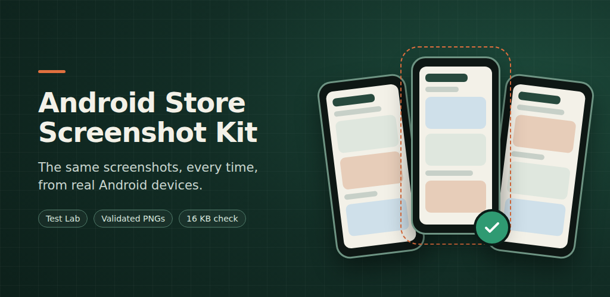

Dans les coulisses
pwa-kit
Une petite brique qui aide les applications Web à fonctionner hors connexion et à rester à jour.
De vraies captures de vraies applications Android, prises de la même façon à chaque fois et prêtes pour Google Play.

Les captures du store se périment à chaque changement de l'application, et les faire à la main sur un téléphone est lent et jamais tout à fait identique. Ce kit en fait une étape reproductible : chaque application garde un petit test qui prépare ses propres données et parcourt ses écrans, et le kit s'occupe du reste.
Il compile l'application et son test, les exécute sur l'appareil Firebase Test Lab choisi, suit l'exécution jusqu'au bout, télécharge les captures et les vérifie selon les exigences de Google Play avant de les copier dans le dossier store de l'application.
Le téléchargement contient du code source et une configuration synthétique, pas un APK ni des captures d'écran de magasin. L’exécution de Test Lab nécessite votre propre projet cloud et peut utiliser un quota facturé.
Voici les captures tablette de Pocket Omaha pour Google Play, prises par le kit sur une vraie Pixel Tablet dans Firebase Test Lab. Le test charge des données enregistrées pour Apple, JPMorgan et Nokia : aucune donnée de marché n'a été récupérée et chaque exécution affiche les mêmes chiffres.
La première exécution a aussi fait apparaître un avertissement de compatibilité Android sur l'alignement de l'une des bibliothèques natives de l'application. Après la mise à jour de la bibliothèque, une deuxième exécution s'est déroulée sans lui.


L'outil en ligne de commande est un script Python unique qui ne nécessite que Python 3.11. Les utilitaires partagés forment une petite bibliothèque Android écrite en Java : ils n'imposent aucune version supplémentaire de Kotlin aux applications qui les utilisent et fonctionnent avec AGP 8 comme avec AGP 9. En CI, les appareils virtuels peuvent être testés à chaque pull request, et les appareils physiques réservés aux versions candidates. Le code original du kit et sa documentation sont sous licence GPL-3.0-or-later.
Une petite brique qui aide les applications Web à fonctionner hors connexion et à rester à jour.

Une petite console pour gérer les invitations et les appareils des applications Web privées.

Comprenez ce qui a changé dans les entreprises que vous suivez. Revoyez vos raisons.